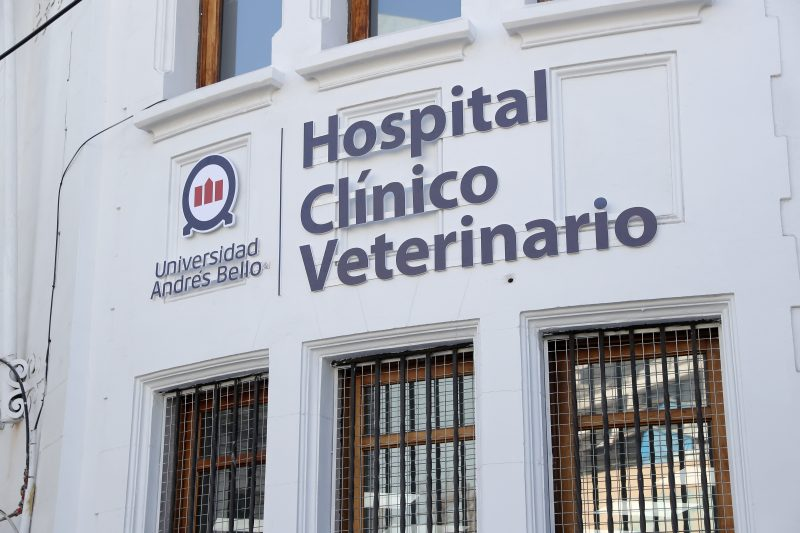
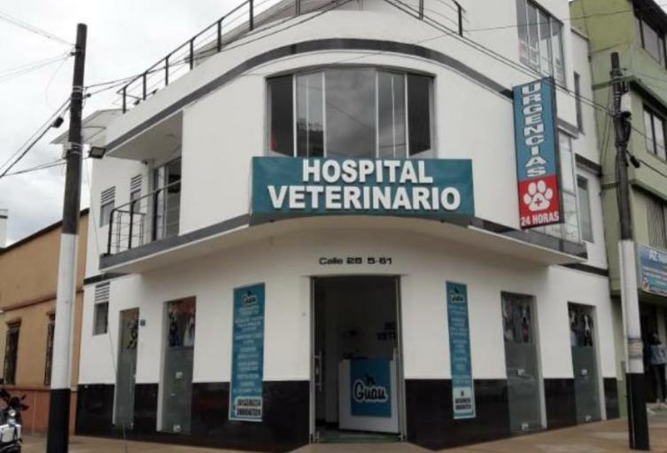
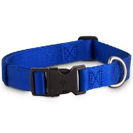
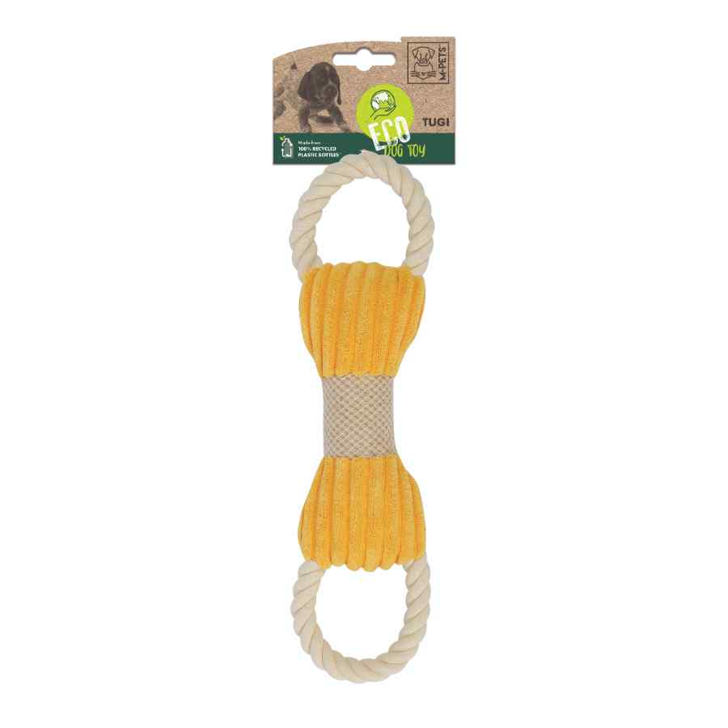

.jpg)
.jpg)
Fundadores e Inicio (2019): Javiera, una diseñadora gráfica, y Mateo, u...n estudiante de veterinaria, eran amigos y voluntarios en un refugio de animales en Santiago. Se dieron cuenta de la creciente necesidad de productos para mascotas que fueran de alta calidad, sostenibles y producidos localmente. Con sus ahorros y una pasión compartida, fundaron "Patitas Felices" en 2019, una pequeña tienda en el Barrio Italia. Su objetivo era ofrecer no solo productos, sino también un espacio de comunidad para los amantes de los animales.
Crecimiento y Sucursales: El enfoque en productos únicos y el excelente servicio al cliente les ganó una base de clientes leales. Para 2022, abrieron una segunda sucursal en Providencia. Ahora, para seguir creciendo y dar a conocer su marca en todo Chile, necesitan una presencia en línea que refleje la calidez y la misión de su negocio.
Sucursal Barrio Italia imagen representativa:
Sucursal Providencia
| Producto | Descripción | Precio | Imagen representativa |
|---|---|---|---|
| Collares y Correas | Hechos a mano con materiales reciclados. | $15.000 - $30.000 |  |
| Juguetes Ecológicos | Fabricados con materiales no tóxicos y sostenibles. | $10.000 - $25.000 |  |
| Camas para Mascotas | Camas cómodas y duraderas hechas con telas orgánicas. | $40.000 - $80.000 | |
| Alimentos Naturales | Comida orgánica y saludable para perros y gatos. | $20.000 - $50.000 | |
Imagenes obtenidas de: